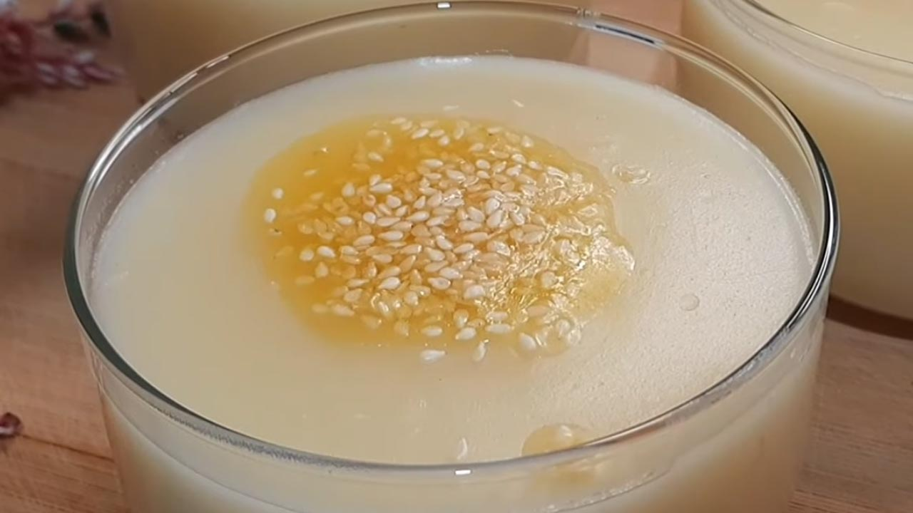

Bulamaç Tatlısı Tarifi

Malzemeler:
- 1 yemek kaşığı tepeleme toz şeker
- 1 yemek kaşığı tepeleme un
- 1 yemek kaşığı tereyağı
- 2 bardak su
- İri dövülmüş ceviz içi
Bulamaç tatlısı yapılışı:
- Küçük bir tencere içine 2 bardak su dökün. Suyun üzerine 1 yemek kaşığı tepeleme toz şeker ve 1 yemek kaşığı tepeleme un ekleyin.
- Tenceredeki karışımı pürüzsüz bir kıvam alana kadar çırpıcı ile iyice karıştırın.
- Ocağın altını yakıp, kısık ateş üzerinde kaynayana kadar sürekli karıştırın.
- Diğer tarafta küçük bir tava içine 1 yemek kaşığı tereyağı koyup, biraz kızdırın.
- Bulamaç tatlısı piştikten sonra üzerine kızdırdığınız tereyağını dökün.
- Tatlı sıcakken iyice karıştırın.
- Hazırladığınız bulamaç tatlısını bir kaseye alıp, oda ısısında soğumaya bırakın. Ardından da buzdolabında 2 saat soğumaya bırakın.
- Soğuduktan sonra üzerini bolca iri dövülmüş ceviz ile süsleyerek servis edebilirsiniz.